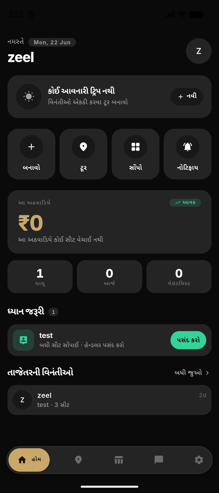
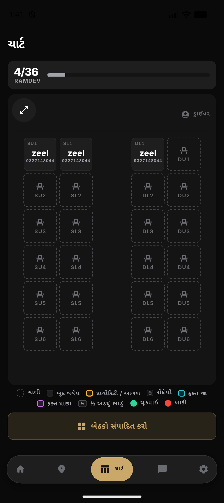
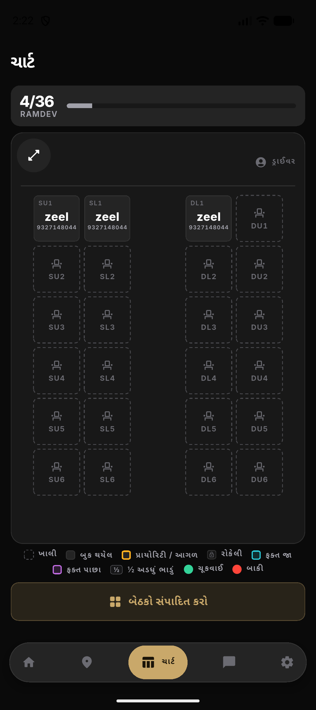
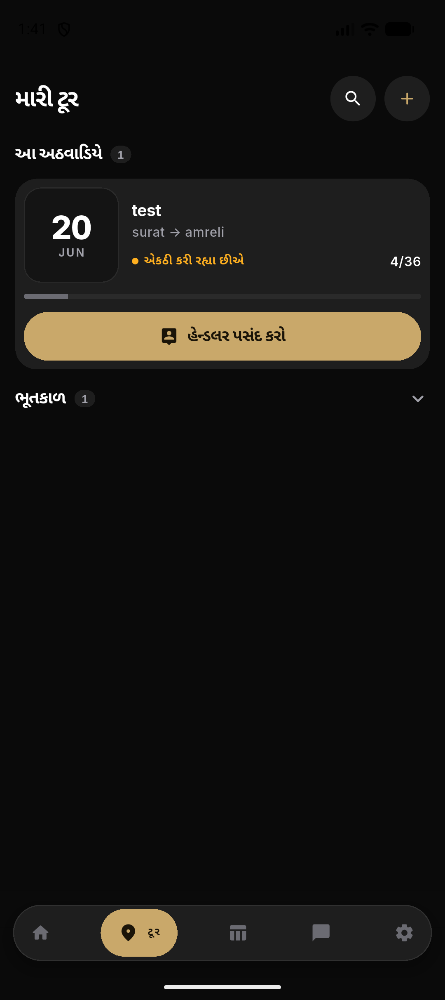
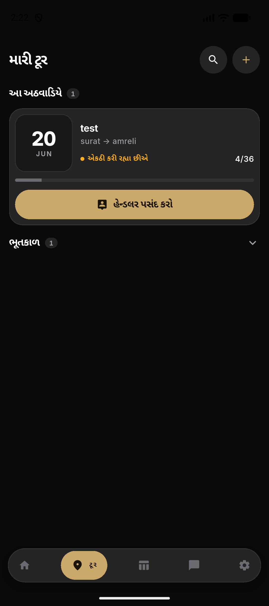
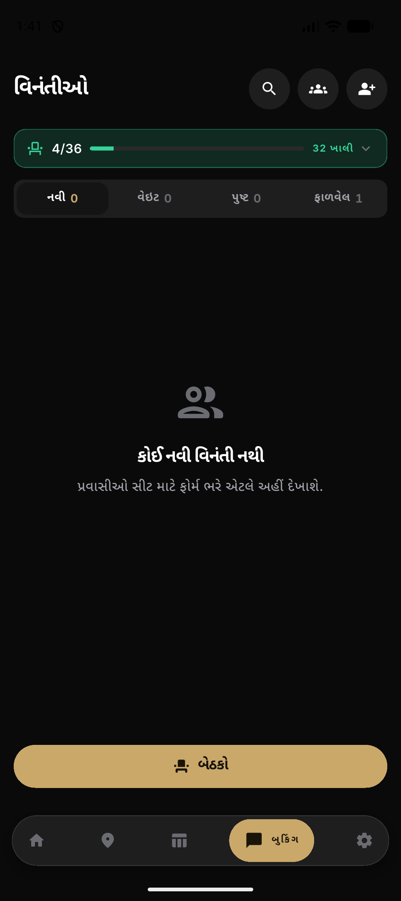
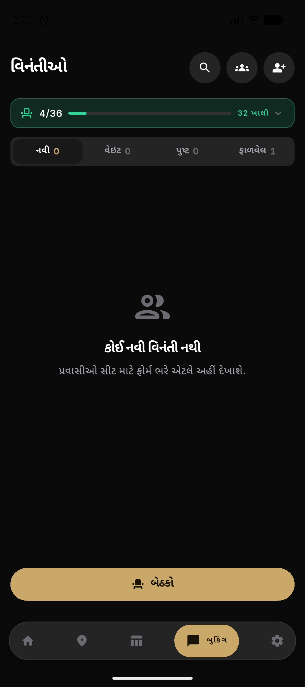
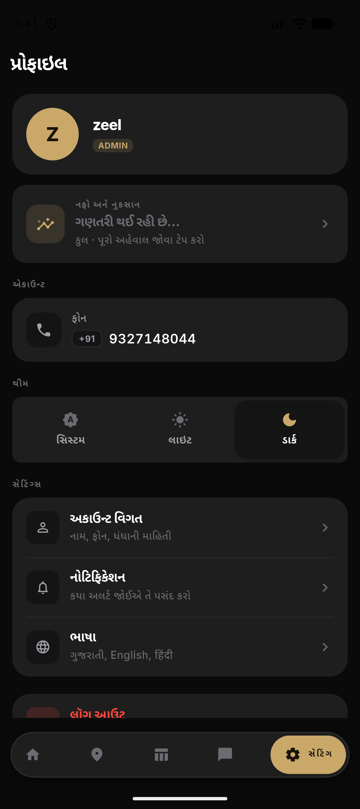
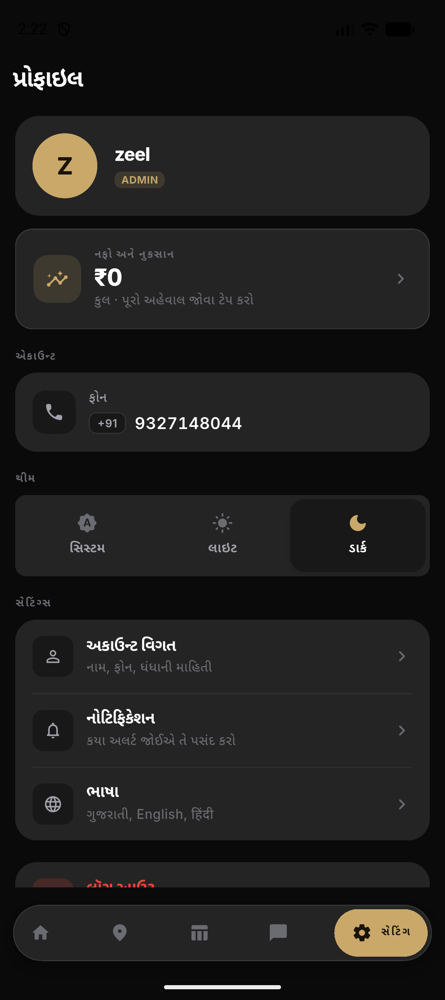

Palette is unchanged — champagne gold on graphite stays exactly as you have it. This pass fixes execution: surface depth, consistent spacing, and one canonical version of each drifted component. Below: real before/after screenshots from the emulator, then rendered swatches of the canonical components (using your actual hex tokens).
The real lever isn't lighter fills (subtle = invisible, stronger = "too gray") — it's a
hairline edge on every card: border = white @ 9% in dark mode (the same crisp
edge the dock nav already uses), plus a small fill lift
card #141414 → #181818.
The fill stays near-black, so it never goes gray — the defined edges do the separating.
Cards now read as distinct panels instead of one flat dark sheet.
Today neutral dark cards in UgamCard draw no border and no shadow — so they had no edge at all. That's the gap this closes.
Tiles, money card and stat tiles lift off the background.

The chart panel + progress card read as distinct surfaces.








These won't look dramatically different on screen — that's the point. Today each family has several variants; the spec collapses each to one. Confirm the canonical look:
#EC4899 in TourStatusBadge._IconCircle + handler _StatusAppBar reuse UgamIconButton.| Area | Today | After |
|---|---|---|
| Dock clearance (scroll bottom pad) | 8 different values: 8, 20, 24, 32, 40, 112, 140, 160 | one token: dockClearance = 140 (+ tall for selection bars) |
| Home headers | 3 custom: _Greeting, _TopBar, _StatusAppBar |
one UgamHomeBar; UgamAppBar on every pushed screen |
| Empty / sparse screens | bare voids + inline conditionals (charts, tour_detail) | UgamEmpty everywhere — no dead space |
| Lateral gutter | mostly 14, but 16/20 sneak in (legal_document) | 14 everywhere (documented reading-width exceptions only) |
| Sheets | occupant_action_sheet re-rolls modal chrome | all sheets through UgamSheet.show() |
If the depth + component direction look right, I'll move to the implementation plan. Otherwise tell me what to change — push depth more/less, different button hierarchy, scope to admin-only first, etc.